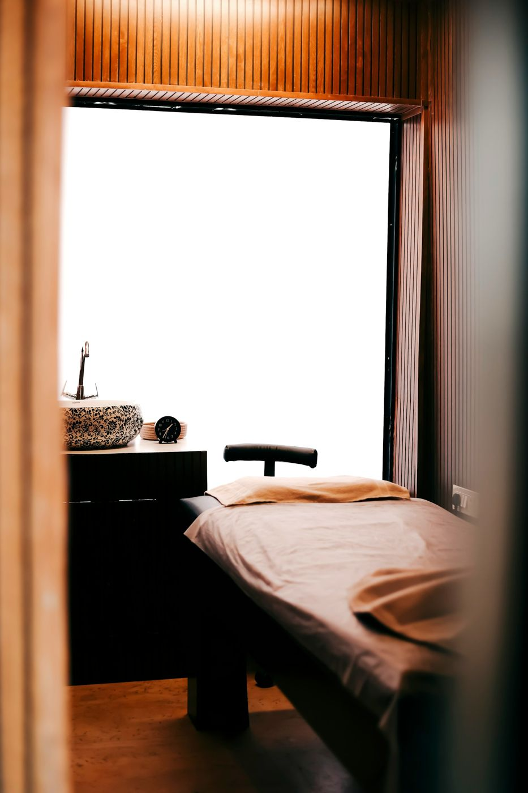
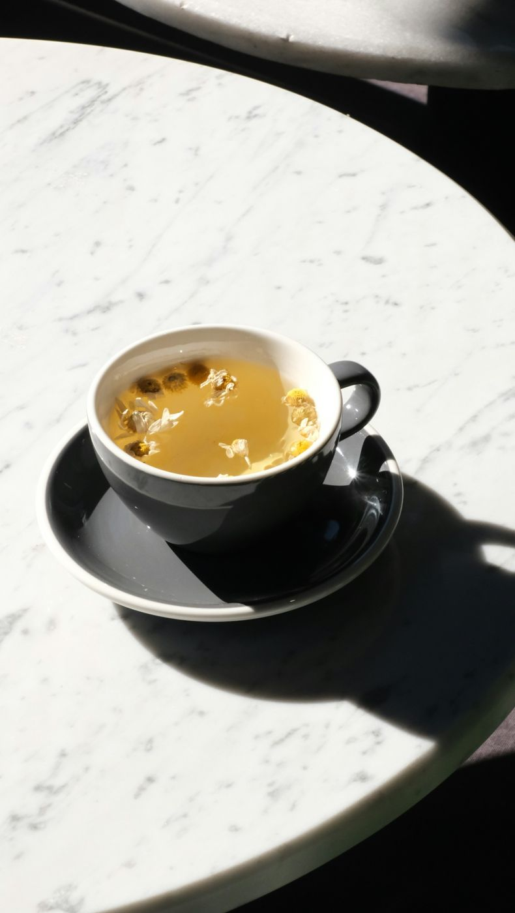

押さない、もまない手技
強い刺激は使いません。からだの緊張がほどけるのを待ちながら、関節や筋肉のバランスをやさしく整えます。施術後のもみ返しの心配もほとんどありません。

About
からだが、自分でゆるんでいく場所。

Message
はじめまして、院長の凪です。整体の仕事を始めて12年、強い力で押したりもんだりする施術から、少しずつ今のやり方にたどり着きました。からだは、無理に動かされるよりも、安心できたときにいちばんよくゆるみます。
凪では、施術の前にしっかりお話を伺い、ゆっくり、静かな手で整えていきます。帰り道に、肩が軽いことに気づいてもらえたら嬉しいです。
院長 凪 （サンプル用の架空の人物です）

01Reasons
強い刺激は使いません。からだの緊張がほどけるのを待ちながら、関節や筋肉のバランスをやさしく整えます。施術後のもみ返しの心配もほとんどありません。
4つの個室はすべて扉つき。周りの声や視線を気にせず、ご自身のからだに集中していただけます。お着替えもお部屋の中でどうぞ。
施術のあとは、ご自宅でできるケアをお伝えします。マイページとブログで、次に来る日までの過ごし方もサポートします。
02Space


Reservation
初回はカウンセリング込みの90分。Webから24時間ご予約いただけます。